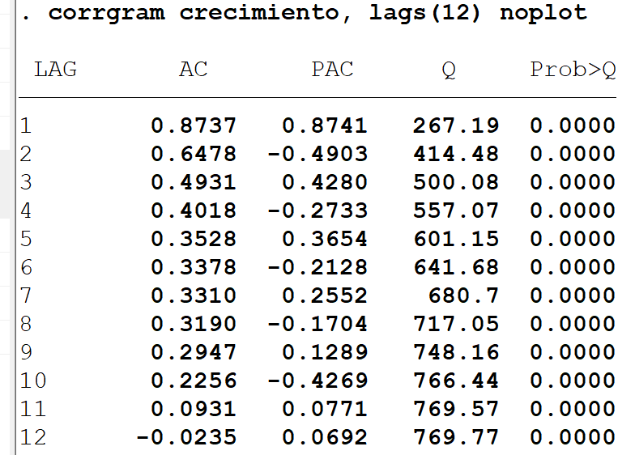
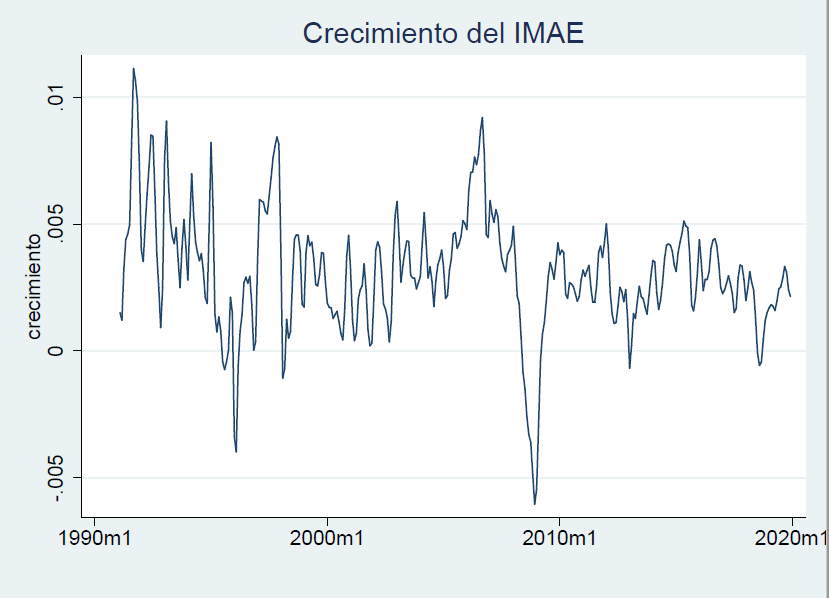
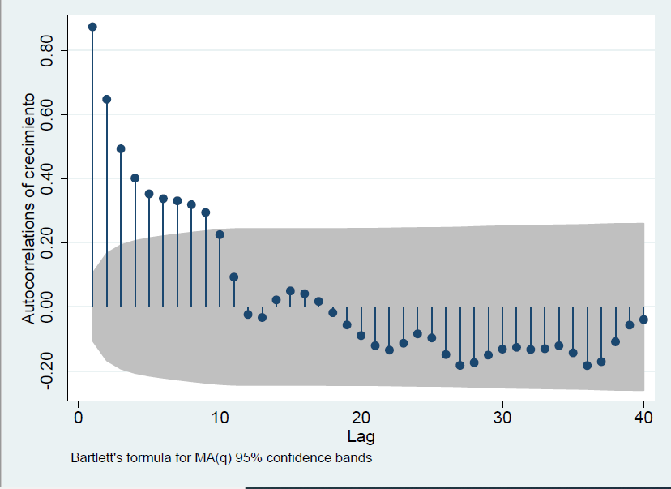
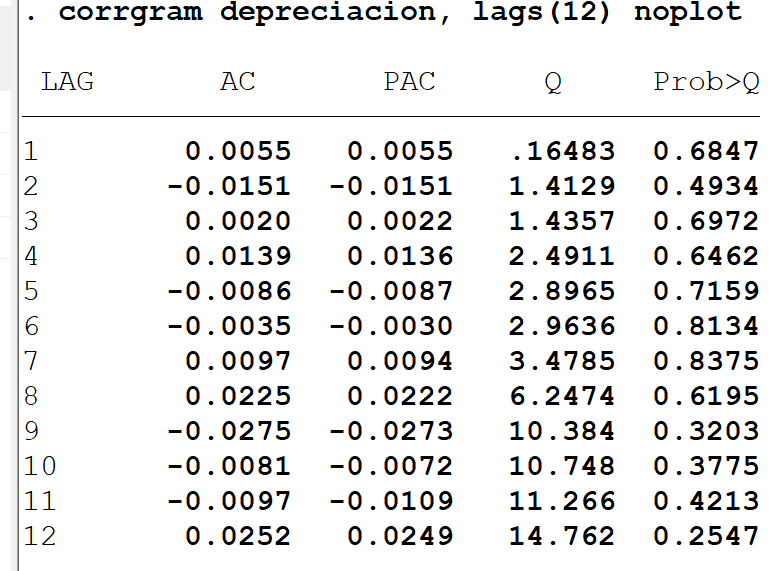
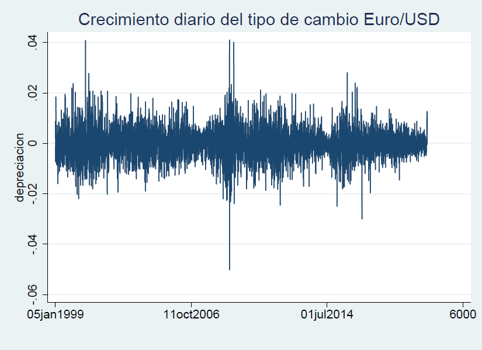
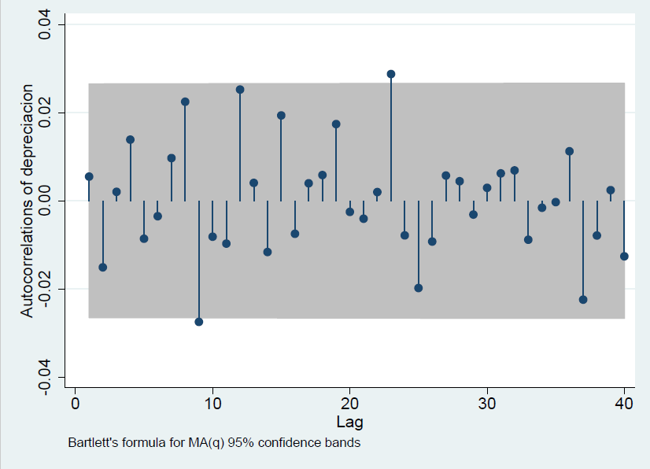

from bccr import SW
import numpy as np
import matplotlib.pyplot as plt
plt.style.use('seaborn')
import pandas as pd
import statsmodels.api as sm
1.6. Pruebas de series de tiempo¶
Determinando si una serie de tiempo es ruido blanco¶
Cuando se estiman modelos de series de tiempo, es importante evaluar si los residuos de la estimación corresponden a una realización de un proceso de ruido blanco.
Recordando que un proceso ruido blanco \(\left\{\epsilon_t\right\}\) es tal que
una forma natural de evaluar si los residuos son ruido blanco es determinar si las autocorrelaciones
para todo \(\tau\geq 1\)
Test de Box-Pierce¶
\(\rho_1 = \rho_2 = \dots =\rho_m = 0\) (sí es ruido blanco)
\(k\) es número de parámetros estimados
Si \(Q^{*} > \chi_{m-k}(1-\alpha)\), rechazar \(H_0\) con \(100\alpha\%\) de significancia: la serie no es ruido blanco.
La intuición es que si la serie no es ruido blanco, algunos \(\hat{\rho}_j\) serán “muy grandes”, y entonces \(Q^*\) también lo será.
Test de Ljung-Box¶
\(\rho_1 = \rho_2 = \dots =\rho_m = 0\) (sí es ruido blanco)
\(k\) es número de parámetros estimados
Si \(Q^{*} > \chi_{m-k}(1-\alpha)\), rechazar \(H_0\) con \(100\alpha\%\) de significancia: la serie no es ruido blanco.
Este test es similar al de Box-Pierce, pero ajustada para muestras pequeñas.
Test de Durbin-Watson¶
\(\rho_1 = 0\) (no hay autocorrelación)
Si \(d\) está “lejos” de 2 según los valores críticos de DW, rechazar \(H_0\): la serie sí presenta autocorrelación.
Esta prueba no es válida para residuos de una ecuación donde haya rezagos de la variable dependiente.
Ventajas de Box-Pierce / Ljung-Box sobre Durbin-Watson¶
Box-Pierce / Ljung-Box evalúan la existencia de autocorrelación de cualquir orden, no solo de primer orden.
Sus resultados también son válidos para evaluar residuos de regresiones que contienen rezagos de la variable dependiente.
Crecimiento del IMAE
Los resultados de las pruebas Ljung-Box son consistentes con lo que obtuvimos a partir de un autocorrelograma: el crecimiento mensual del IMAE no es ruido blanco.
  {kind=link}
{kind=link}
{kind=link}
Cambios en el tipo EUR/USD
Las pruebas Ljung-Box no rechazan que esta serie sea ruido blanco. Pero en la gráfica parece que la varianza no es constante, por lo que posiblemente la serie tampoco sería ruido blanco.
  {kind=link}
{kind=link}
{kind=link}
De no-correlación a independencia y normalidad¶
El hecho de que una serie no esté autocorrelacionada no implica que sus elementos sean independientes o que estén normalmente distribuidos.
Ausencia de autocorrelación implica independencia solamente si las variables están normalmente distribuidas.
Usualmente se asume normalidad del proceso estocástico, porque muchos tests dependen de este supuesto.
Para evaluar si este supuesto es apropiado, analizamos los momentos tercero (asimetría) y cuarto (kurtosis).
Test de normalidad¶
\(S\equiv\E\left(\frac{y-\mu}{\sigma}\right)^3 = 0,\; K\equiv\E\left(\frac{y-\mu}{\sigma}\right)^4 = 3\) (sí es)
Si \(JB > \chi^2_{2}(1-\alpha)\), rechazar \(H_0\) con \(100\alpha\%\) de significancia: la serie no es normal.